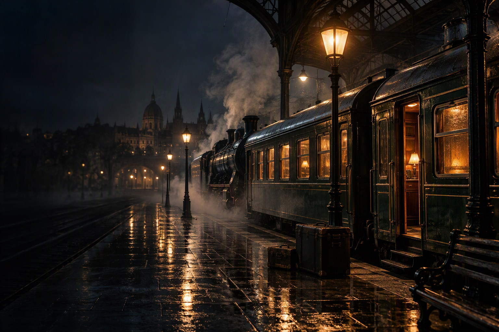

Een onverwachte reis

Plotseling lag hij daar. Door een onbekende in je brievenbus gestopt. Een envelop, maar daarop alleen je naam. In de envelop een korte brief.
Als ik het je zou vragen, zou je nee zeggen. Dus vraag ik het niet.
Maar ik wil het weten -en jij ook, dat weet ik zeker-: heb jij het in je?
Ben jij degene die ik zoek? Dan ben ik degene die jij zoekt.
Zoek me niet, ik laat me vinden. Het kost je geen geld, voor je reis is betaald. Volg alleen mijn spoor.
Maandag, 10.07 uur, Gare d’Orsay, perron 2, de trein naar Orléans.
Reis licht.
Bij de brief een uitzonderlijk kaartje, met daarop:
Voor de houder van deze ticket zijn alle kosten betaald aan de spoormaatschappij.
Eigenlijk was het geen keuze. En dus sta je nu hier. Op perron 2 van Gare d'Orsay. Tussen drommen reizigers en stapels koffers. Precies volgens dienstregeling hoor je je trein aankomen. Even later gaat de deur recht voor je open. De reis begint.
Spring aan boord en ga mee spoorzoeken.
Waar wil je beginnen?
Begin bij de eerste puzzel of kies een later punt als je de voorafgaande puzzel al hebt opgelost.